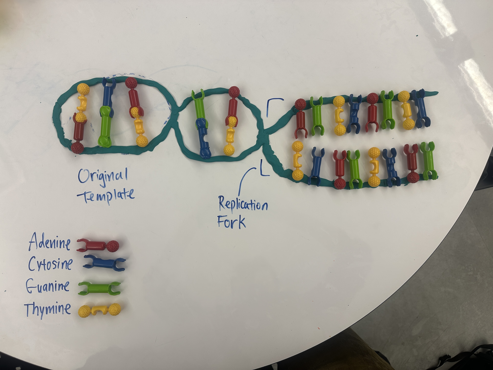

Hanbo Song
I research a wide variety of topics in the realm of physics, computer science, and mathematics. Currently, I'm inspired by the intersection between the three, primarily in scientific machine learning. I also host Hack Club's AMA series.
Interviews

Tim O'Reilly
In this AMA, Tim O'Reilly, founder of O'Reilly Media, shares his journey from a tech writer to a leading figure in publishing and technology. He discusses the evolution of his company, the impact of AI on society, and the importance of ethical considerations in technology development. O'Reilly emphasizes the need for entrepreneurs to focus on meaningful work rather than just financial gain, and he introduces the AI Disclosures Project aimed at promoting transparency in AI technologies.

Buck Shlegeris
In this AMA, Buck discusses his work as CEO of Redwood Research on AI control and safety. He emphasizes the importance of understanding AI's potential to misalign with human interests and the need for effective control strategies. The discussion also touches on the role of interpretability in AI, the societal implications of AI advancements, and the responsibilities of AI companies in mitigating risks.

Arthur Conmy
In this episode, I hosted an Ask-Me-Anything with over 100 RSVPs. Our guest, Arthur Conmy, is a leading AI safety researcher at Google DeepMind and the University of Cambridge, known for pioneering automated circuit discovery and training over 400 sparse autoencoders for Gemma Scope. Whether you're new to AI or deeply into mechanistic interpretability, come learn how he's helping lift the lid on black-box LLMs.

Armando Solar-Lezama
In this AMA, Professor Armando Solar-Lezama discusses the concept of program synthesis, its evolution, and its intersection with AI and deep learning. He emphasizes the importance of collaboration between machines and developers, the role of formal guarantees in program synthesis, and the potential of neuro-symbolic programming in scientific discovery. The discussion also touches on the challenges of AI safety and the unique contributions of academia to the field of AI research.

Dr. Ilan Strauss
In this AMA, Dr. Ilan Strauss discusses the economic implications of artificial intelligence, focusing on market structures, protocols for competition, and the evaluation of AI systems. He explores the potential impacts of AI on employment, taxation policies, and the contrasting economic models of China and the United States. The discussion also touches on the concept of degrowth and the future of AI in society, emphasizing the need for proactive measures to ensure equitable outcomes in an increasingly automated world.

Prof. Michael Littman
In this AMA, Brown Professor Michael L. Littman, pioneer in machine learning and reinforcement learning, discusses his encounters with AI usage and its effects on the education of students, productivity of workers, and development of core fundamental skills. Through wonderful personal stories, references to various studies, and opinions of other educators, he paints a comprehensive picture of where we stand in terms of AI risks.

Professor Karen Livescu
In this AMA, Professor Karen Livescu discusses her research in speech and language processing, focusing on multimodal representation learning across spoken, written, and signed languages. She explores efforts to make AI language models more universal and capable. The discussion dives into challenges in multimodal learning, the importance of inclusivity in AI design, and the future of speech technology. There is key emphasis on collaboration, data efficiency, and ethical considerations in developing systems that bridge human communication and machine understanding.
Gallery

DNA Replication Model
A model of DNA replication and its components.